PoBox UI pass, 2026-10-16
Before (left, taken before any of tonight's changes) and after (right), all at 1080 x 1920. The yellow numbers on the pictures match the list of changes at the top.
- Five anchors on every screen. Title top-left, FPS top-centre, menu/settings top-right, DEBUG bottom-left, version bottom-right (Application.version, small and dim) on the menu, the arena, the free-for-all and the testbed. The free-for-all gained DEBUG, a debug panel and the version. The layout audit now checks all five on every screen, and checks that the version label shows the build's version. done
- One results card. The arena and the free-for-all share one card: winner, method, the pick's payout or the cup's news, the punch numbers, and one row of four icon + short word chips (REPLAY, SHARE, NEXT/AGAIN, MENU) that fits a 360 dp phone. The free-for-all's own result styles are gone. done
- Settings in three tabs: SOUND, DISPLAY, DEBUG. SOUND has only sound and quality. DISPLAY has voice, buzz, slow-mo (bullet time, saved as
pobox.bullettime) and the FPS cap. DEBUG has X-ray, brain cam (arena only), READINGS (opens the debug panel), RESET LADDER (arena only) and a TWITCH channel field (pobox.twitch; empty means off). Everything is saved through SettingsPage.Load/Save. Nothing scrolls. done - Switches show a dot instead of ON/OFF. SOUND, VOICE, BUZZ, SLOW-MO, X-RAY and BRAIN show an icon (where Glyph has one), a short word and a dot that lights up when the switch is on. The tooltip says "Sound on" or "Sound off" in words. SHARE got a new Share glyph. done
- Menu: a 2 x 4 grid of boxers, tapped in order. The first tap picks red, the next blue, and so on. A RED or BLUE tag on the card shows which corner each boxer is in. CUP, FIGHT and ALL sit in the bottom thumb row, so the top-right holds only the settings. Seven boxers are shown; Sokol stays off the 1-on-1 menu because he has no match brain yet (README, 2026-10-15). done, 7 of 8 boxers
- Hidden debug switch. Three fingers on the screen, or a long press (0.6 s) on the FPS chip in the editor, opens the debug panel and turns on X-ray. A plain tap on FPS still opens the panel. The arena and free-for-all panels now show physics and brains in ms (PerfTelemetry.PhysicsMs / InferMs). done
- Phone shapes. OneScreenTests now runs 16:9 (720 x 1280 and 1080 x 1920), 19.5:9 (1080 x 2340, new), 20:9 and 21:9, each with and without a top cutout. It covers the menu (each settings tab, the cup, debug), the arena (each settings tab), the free-for-all (each settings tab, debug, the result) and the testbed (new). done
- State-flow test.
StateFlowTestspresses the real buttons through the panel: Menu, FIGHT, the result, MENU, ALL, the result, AGAIN, the result, MENU. A hidden, disabled or missing button fails it as a dead end. So does any console error, and so does taking longer than 90 s. done - One stylesheet. The appended "features" block is folded into the sections it belongs to. The free-for-all's duplicate result, winner, method and actions rules are deleted. Free-for-all offsets are now tokens (
--ffa-under-board,--ffa-call-top), so chat and the referee's call no longer overlap. A scan finds no unused selectors. done - Long names are cut short. Plate names, board rows, cards, the walk-on, the winner, league rows, cup lines, pick buttons, the pairing on FIGHT, chat and the brain title end in an ellipsis instead of pushing their neighbours aside. The audit treats an ellipsis as intended. The free-for-all board rows went from 72 to 80 px, because two lines of text overflowed them. done
The first screen
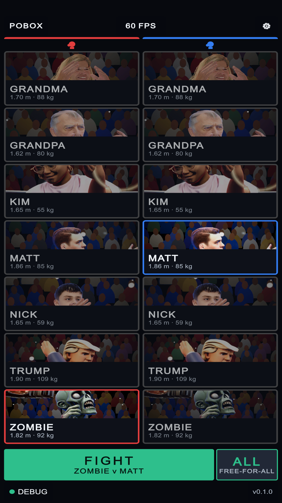
BEFORE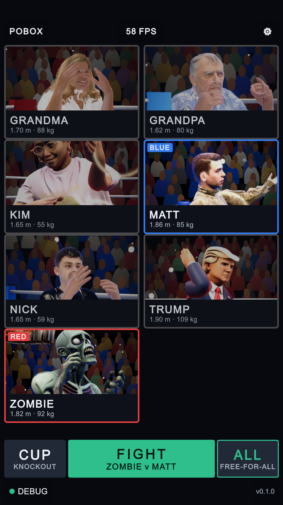
AFTER 5 10 5 1Settings
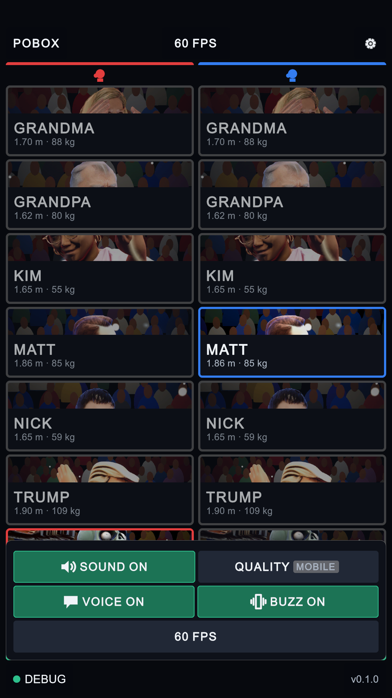
BEFORE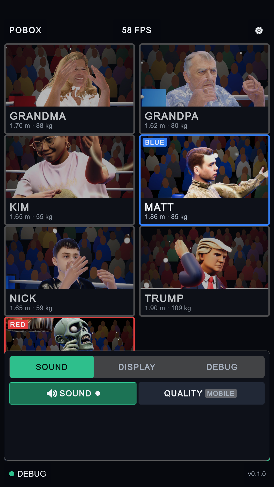
AFTER 3 4The arena
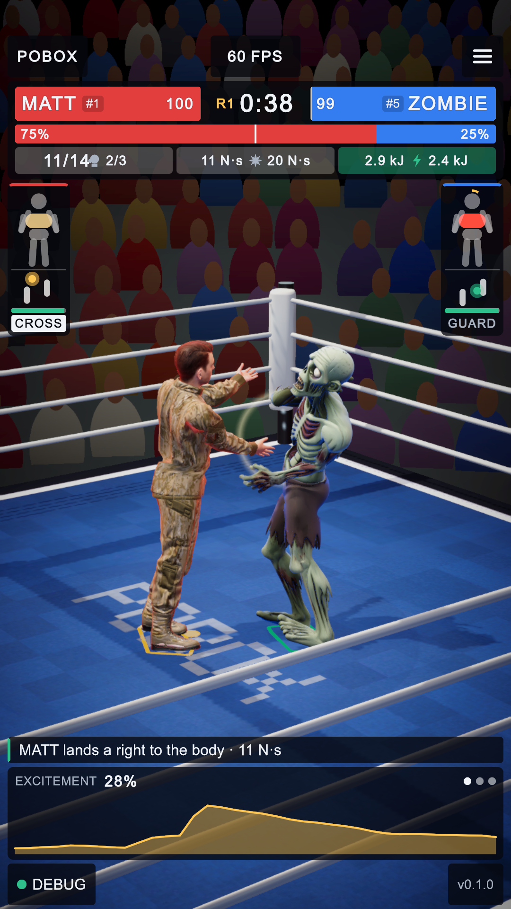
BEFORE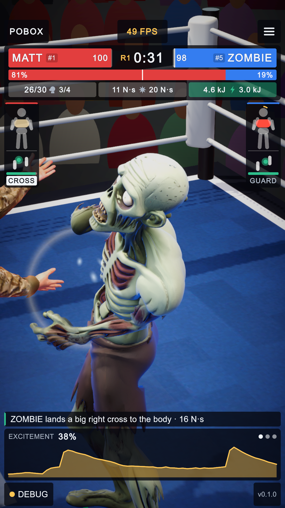
AFTER 10 1The fight HUD itself is unchanged; the arena's changes are the result card, the settings and the debug panel.
The arena's result card (new picture)
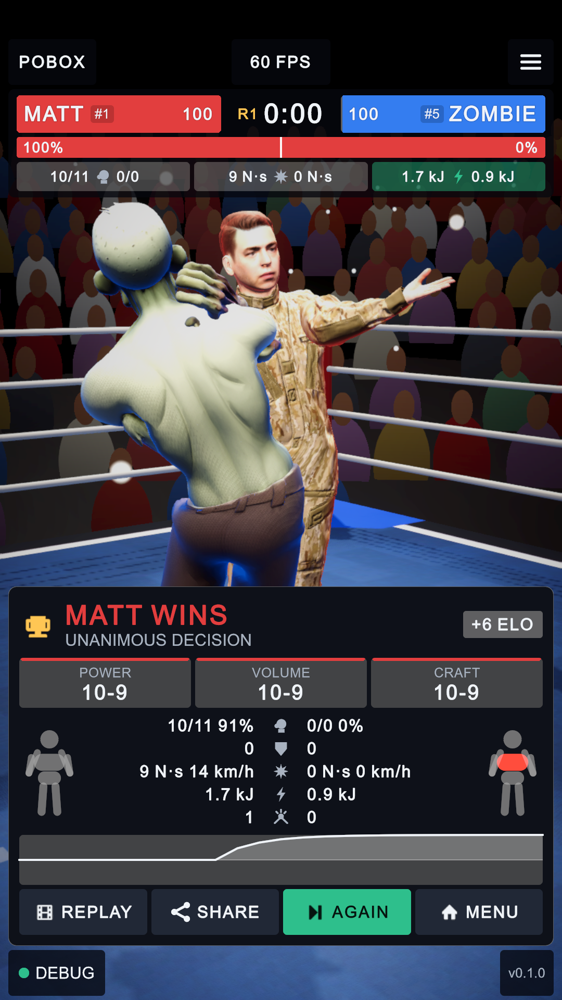
AFTER 2 2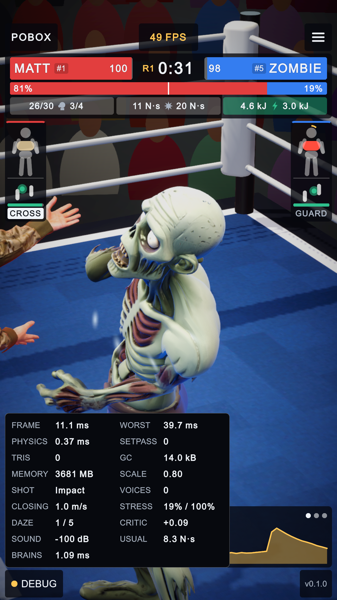
AFTER · DEBUG 6The free-for-all
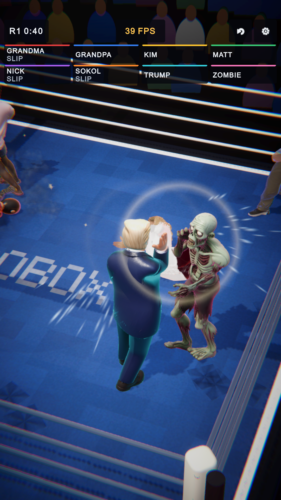
BEFORE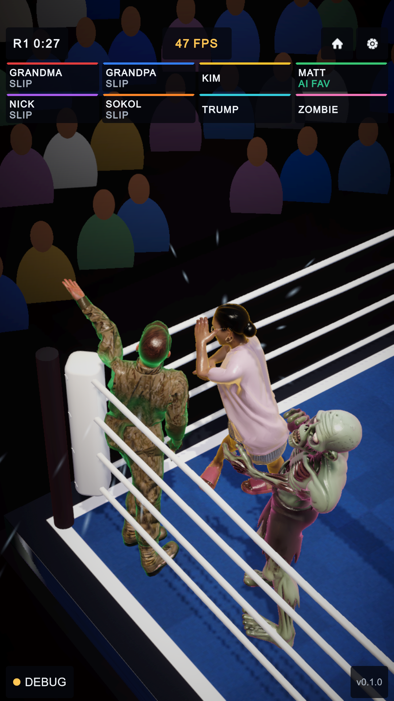
AFTER 10 1 1The free-for-all's result and the cup (new pictures)
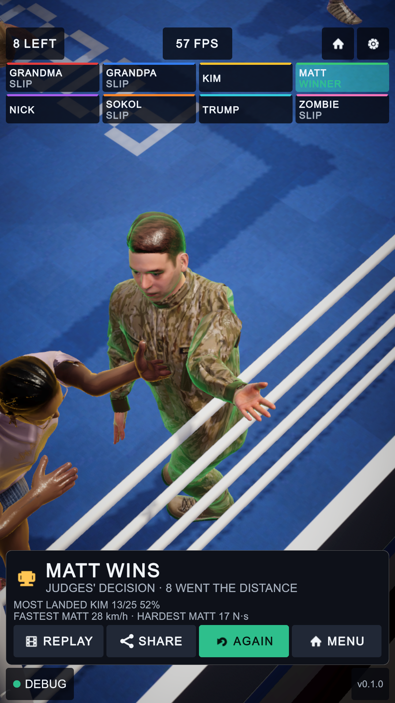
AFTER 2 2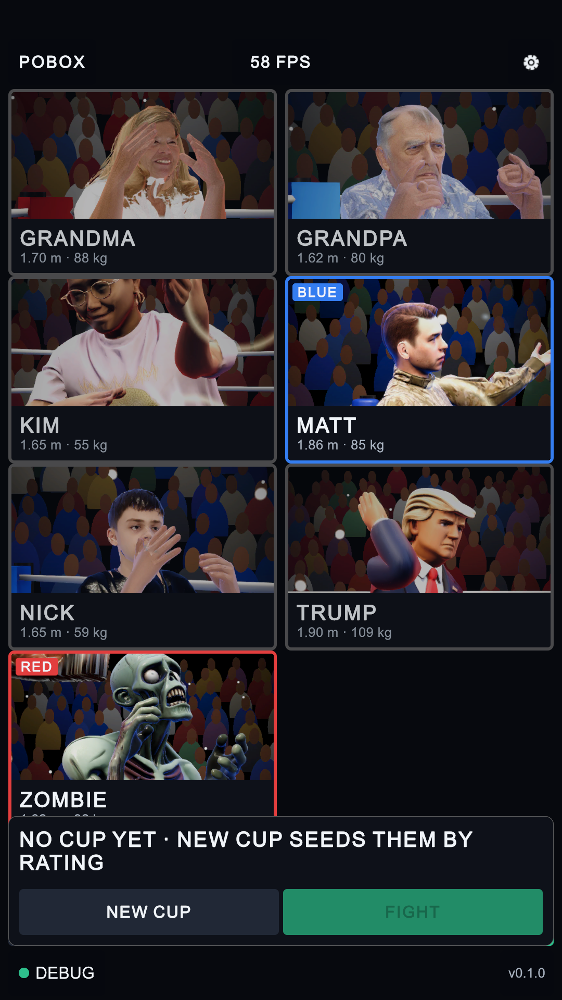
AFTER · CUP 5Files: Assets/UI/Theme.uss, Hud.uxml, Melee.uxml, Menu.uxml, Settings.uxml, Testbed.uxml; Runtime/UI/SettingsPage.cs, DebugPanel.cs (new), MenuView.cs, HudView.cs, MeleeHud.cs, TestbedHud.cs, LayoutAudit.cs, Glyph.cs; Editor/DevTools.cs (layout command); Tests/OneScreenTests.cs, StateFlowTests.cs (new).